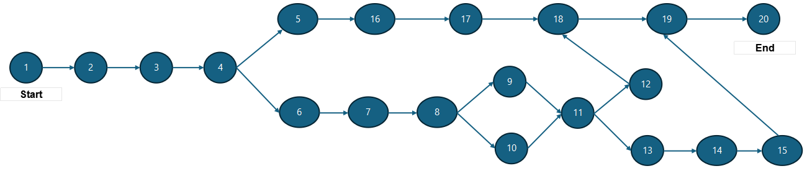

<div class="elearingnewui project_management">
  <div class="container">
    <div class="body-element">
      <div class="projectMap">
        <div class="row" class="element-first">
          <div class="marelegapfood" (click)="openDialog()" *ngIf="foodforthought"
            style="text-align: right; margin: 0rem 0rem 3rem 0rem">
            <span class="food-thought-span"><i class="bi bi-bar-chart-fill"></i>
              <button class="food-thought-btn">Food For Thought</button></span>
          </div>
        </div>

        <h1>
          Project Map
          <mat-icon appTippy="
                    <div class='help-tip p-2'>
                      <div style='display:flex;'>
                        <div>
                          <h4 style='color: white; margin:0 auto; font-weight: 600;'>Q.1</h4>
                        </div> &nbsp; &nbsp; &nbsp;
                        <div>
                          <p style='margin: 0 auto; color: white; font-size:13px;'>Which sequence of tasks forms the longest path, and how might its timely completion impact the overall project schedule?</p>
                        </div>
                      </div>
                        <div class='pt-2' style='display:flex;'>
                          <div>
                            <h4 style='color: white; margin:0 auto; font-weight: 600;'>Q.2</h4>
                          </div> &nbsp; &nbsp; 
                          <div>
                            <p style='margin: 0 auto; color: white; font-size:13px;'>How can you strategically allocate resources to efficiently manage the workload on these critical path activities?</p>
                          </div>
                        </div>
                    </div> ">
            help_outline
          </mat-icon>
        </h1>

        <div class="row row-cols-md g-3 py-3">
          <div class="col-md">
            <div class="card h-100" style="border: none">
              <!-- <div class="card-img-top img-top-new" style="text-align: center;">
                                
                            </div> -->

              <!-- <apx-chart
                [series]="projectmap.series"
                [chart]="projectmap.chart"
                [xaxis]="projectmap.xaxis"
                [dataLabels]="projectmap.dataLabels"
                [plotOptions]="projectmap.plotOptions"
              >
              </apx-chart> -->

              <!-- MAP DESIGN SVG -->
              <svg width="1200" height="300">
                <!-- Arrows -->
                <ng-container *ngFor="let task of tasks">
                  <ng-container *ngFor="let nextId of task.next">
                    <ng-container *ngIf="getTask(nextId) as nextTask">
                      <line [attr.x1]="task.x" [attr.y1]="task.y" [attr.x2]="nextTask.x-20" [attr.y2]="nextTask.y"
                        stroke="#333" stroke-width="1.2" marker-end="url(#arrow)" />
                    </ng-container>
                  </ng-container>
                </ng-container>

                <!-- Nodes -->
                <ng-container *ngFor="let task of tasks">
                  <circle [attr.cx]="task.x" [attr.cy]="task.y" r="22" fill="#3A87AD" stroke="#000" stroke-width="1" />
                  <text [attr.x]="task.x" [attr.y]="task.y + 5" text-anchor="middle" fill="white" font-size="12"
                    font-family="Arial">{{ task.label }}</text>
                </ng-container>

                <!-- Arrow marker -->
                <defs>
                  <marker id="arrow" markerWidth="10" markerHeight="10" refX="10" refY="5" orient="auto"
                    markerUnits="strokeWidth">
                    <path d="M0,0 L10,5 L0,10 Z" fill="#333" />
                  </marker>
                </defs>
              </svg>


            </div>
          </div>
        </div>

        <h1>Know Your Task</h1>
        <div class="row row-cols-md g-3 py-3">
          <div class="col-md">
            <div class="row row-cols-md-3">
              <div class="col-md">
                <p>Task</p>
                <select class="input-no_box" [(ngModel)]="result[0]" (focusout)="projectmanagement(result[0])"
                  [disabled]="checkdisable">
                  <option *ngFor="let task of tasks" [value]="task">
                    {{ task }}
                  </option>
                </select>
              </div>
              <div class="col-md">
                <p>Name</p>
                <h4>Venue Research</h4>
              </div>
              <div class="col-md">
                <p>Expected Workdays</p>
                <h4>4</h4>
              </div>
            </div>
          </div>
        </div>
      </div>
    </div>
  </div>
</div>